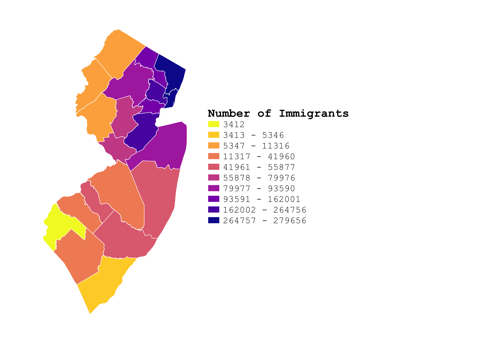

Homework 7: Census Data Choropleth
Heidi Hannoush
This is a choropleth map of the counties of New Jersey. This map presents an easy visual of differing levels of immigration within each NJ county. As the map shows, the number of immigrants is generally highest near large cities, with the most immigrants in New Jersey living along the diagonal from New York City to Philadelphia. The colors shown are in relation to statewide populations of immigrants, and not national. New Jersey hosts a large number of immigrants for its size. The state is only the 5th largest in the nation, but hosts 5% of the USA's total immigrant population. It is important to note that this map does not show what countries or areas of the world the immigrants are coming from and is not a measure of diversity.

Data used for this project
CSV dataset
Link to shapefile
Thanks for stopping by!